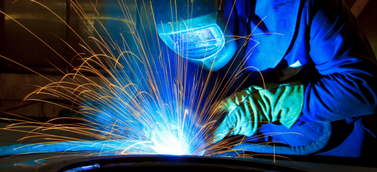

Welkom bij Technoweld!

Techno-weld is een revolutionair produkt op het gebied van het lassen van Aluminium en legeringen en overbrugt een aantal van de voornaamste problemen die verbonden zijn aan de traditionele methodes.
EENVOUDIG IN GEBRUIK.
Verbindingen maken met Techno-weld is een zelfde werkwijze als gas- of zilversolderen en daarom is ervaring met het lassen van aluminium niet nodig. Zoals lassen is het een twee fasen procédé waarbij in de eerste fase het werkstuk wordt verhit tot 380°C en de aan elkaar te zetten delen worden "vertind" met Techno-weld. De Techno-weld legering dringt in het oppervlak, wijzigt de samenstelling en verhoogd de temperatuur van het vertinde gedeelte. De tweede fase verlaagt het smeltpunt van het materiaal. De tweede fase is het opnieuw verwarmen van beide tegen elkaar geplaatste delen tot 380°C zodat de oppervlakten kunnen samensmelten. Iedere warmtebron geschikt om het karwei uit te voeren kan worden gebruikt zoals een acetylene of propaan soldeerbrander. Het is niet nodig de temperatuur tot gevaarlijk smeltpunt te verwarmen, zo voorkomt U een plotseling instorten van het karwei.
WAT ZIT ER IN EEN SET ?
Techno-Weld wordt verkocht in volgende verpakking :
1. DE TECHNO-WELD SET - bestaande uit Techno-weld lasstaven, een roestvrijstalen borstel voor de reiniging van het werkstuk, een roestvrijstalen pen om in de lasrups te krassen en een stap voor stap handleiding.
2. DE TECHNO-WELD AANVULSET - Hierin enkele Techno-weld staven en een stap voor stap handleiding. Wij raden U ten stelligste aan eerst een volledige set aan te schaffen omdat deze de beslist noodzakelijke roestvrijstalen hulpmiddelen bevat.
Voordelen
GEEN VLOEIMIDDEL/DAMPEN.
Het proces heeft geen enkel vloeimiddel nodig en is daarom vrij van giftige dampen. Er zijn geen speciale schoonmaak behandelingen nodig nadat het werk is gedaan. Elke las die met Techno-weld is gemaakt, kan worden geschuurd, geverfd of van een deklaag voorzien zonder de kans dat deze door nawerking van een vloeimiddel wordt vernield.
EEN STERKE SMELTLAS.
Techno-weld vormt een echte las. Ofschoon de lasser het werkstuk niet tot aan het smeltpunt verhit, zal dat deel onder het op de juiste manier aangebrachte Techno-weld smelten en ter plaatse een nieuwe legering vormen. Het ontstane materiaal is erg stevig (zoals een zachte soort vloeistaal), en heeft een goede trek- en druksterkte die nodig is om de las of opgevuld deel te versterken.
MINIMALE VERVORMING.
Omdat bij het Techno-weld procédé het werkstuk slechts geleidelijk tot 380°C moet worden verwarmd, zullen giet en dun plaatmateriaal plaatselijk niet zo vervormen als bij hoge temperaturen die nodig zijn voor Gas, Tig of Mig lassen.
VEELZIJDIGHEID.
Techno-weld kan op bijna alle soorten Aluminium en legeringen worden toegepast, inclusief speciale samenstellingen als MMC, Birmabrite (Land Rover carrosserie), zamac en magnesiumhoudende legeringen. Techno-weld leent zich voor een reeks van toepassingen al naar gelang de aard van het karwei. Van eenvoudig handmatig gebruik tot volledig geautomatiseerd dompelbad technieken.
Het Techno-weld materiaal heeft in gesmolten vorm een hoge oppervlaktespanning en kan daarom worden gebruikt om zowel scheuren en gaten tot 10 mm diameter te dichten als stukken missend materiaal weer op te bouwen.